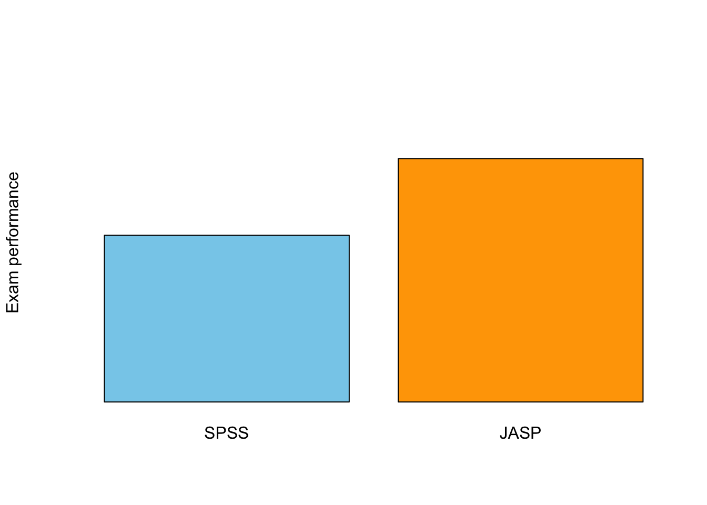
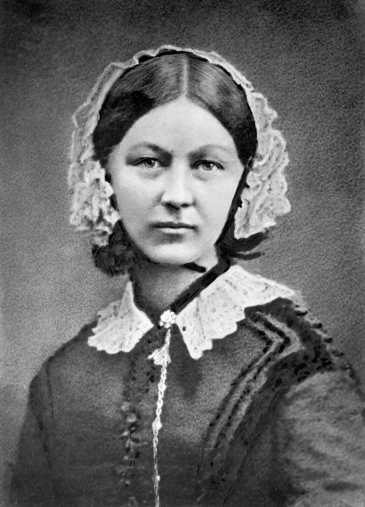
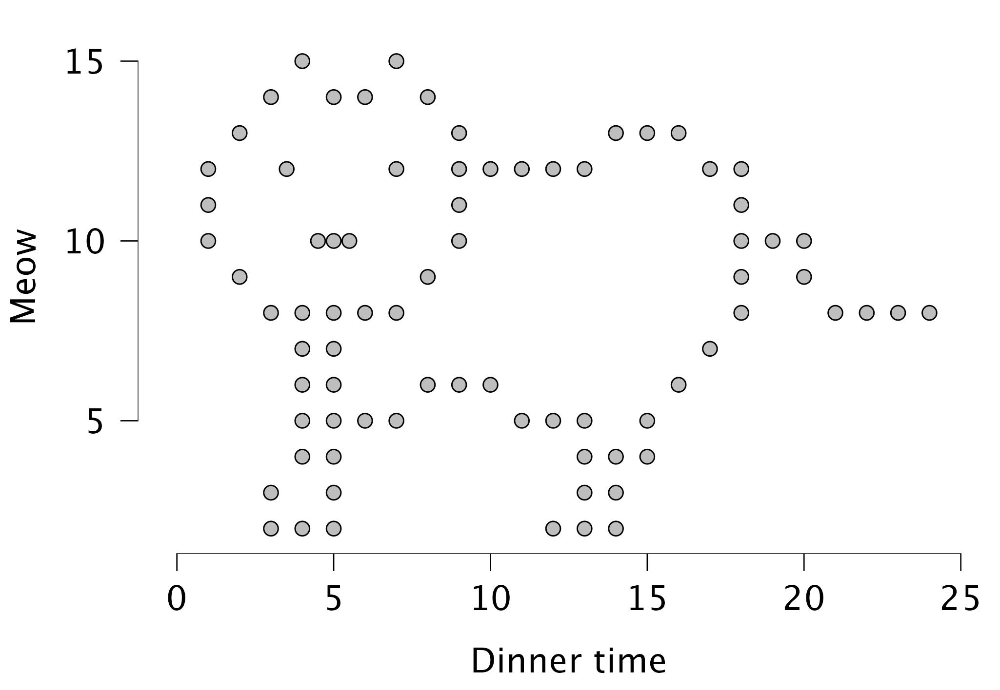
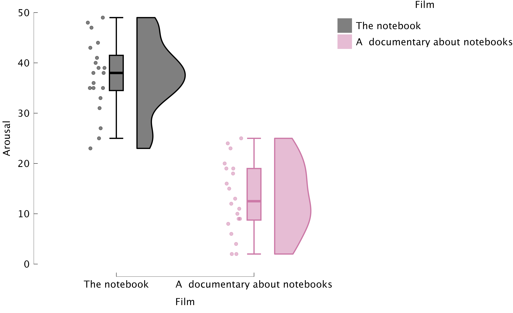
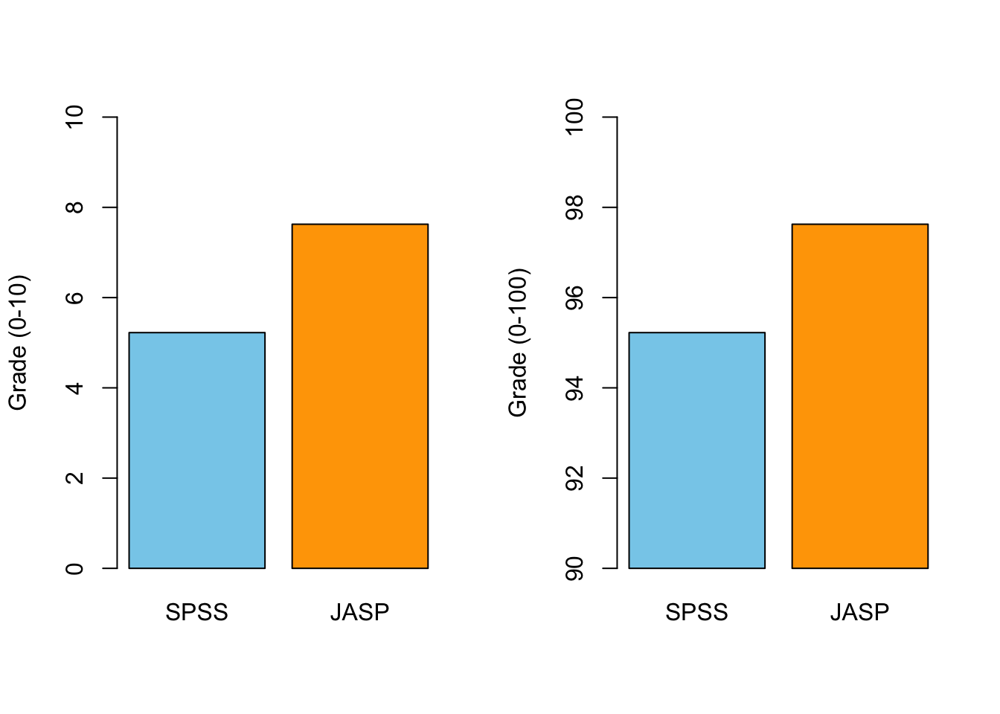
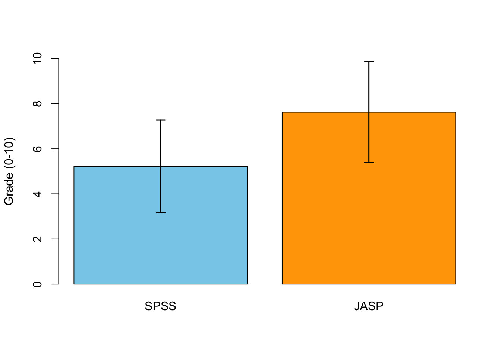

Visualization
Data visualization

Why Visualize Data?
- Quick overview of the data
- Spot patterns, outliers, or errors
- Invite the reader
Why Visualize Data?

Different types of graphs in JASP
- Distribution plots (basic plots)
- Frequency plot when nominal
- Histogram when scale/ordinal
- Correlation plots (basic plots)
- Scatter plots (customizable plots)
- Raincloud plots
Boxplots: Visualizing Spread and Outliers
- Shows median, quartiles, and outliers
- Useful for comparing groups

Raincloud plots: Boxplots + Raw Data

Best Practices in Data Visualization
- Use clear labels and titles
- Avoid unnecessary 3D effects
- Choose appropriate scales
- Check for misleading representations
Critically Assess Graphs
- Are axes labelled (variable, units)?
- Are axes broken/equally spaced?
- Are error bars (e.g., confidence intervals) included where relevant?
Critically Assess Graphs
Scale Matters

Error Bars!
